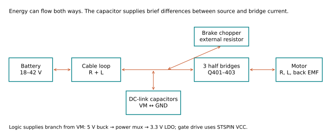
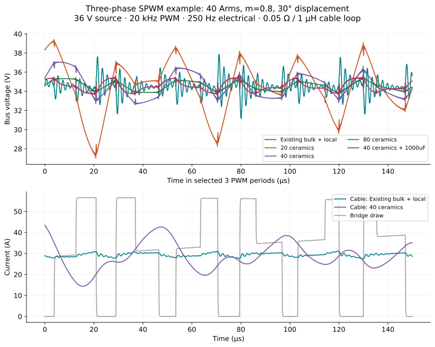
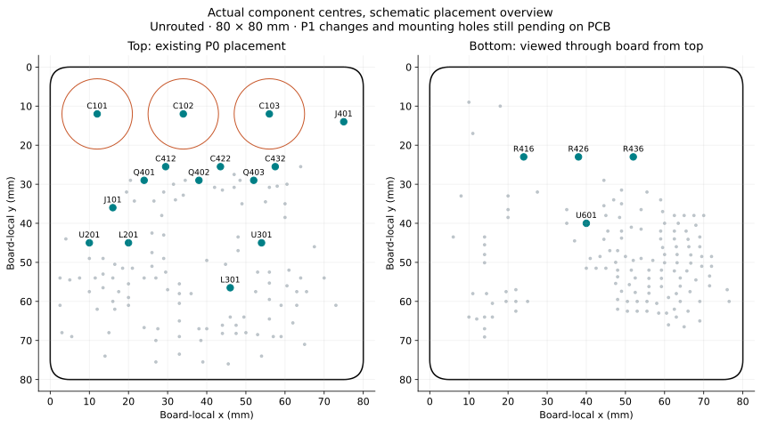
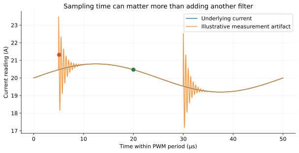

What are we trying to predict?
The motor asks for a changing current. The battery and wiring cannot respond instantaneously. Capacitors supply the difference. Where you place them determines how quickly they can help.

Your control theory connection
Voltage ↔ force; current ↔ velocity; inductance ↔ mass; resistance ↔ viscous damping; capacitance ↔ compliance. These are mathematical analogies, not a physical identity.
The real board
18–42 V target; 20 kHz initial PWM; 0.5 mΩ shunts; gain 28. Existing bulk: 3 × 680 µF. Board placement is still unrouted.
What is assumed
Example motor: 0.1 Ω / 100 µH. Cable loop: 50 mΩ / 1 µH. Ceramic retention: 50%. None is a measurement of your motor, wiring or chosen ceramic part.
Read the guided notebook alongside the experiments. Inputs and evidence distinguish schematic facts from assumptions. All plots run offline; the Python model and numerical data are included.
First prediction: if we double capacitance, which changes—voltage ripple, current ripple, or both?
A winding can have smooth current while the supply sees pulses.
Here one ideal half bridge drives a series resistance, inductance and back-EMF source. High-side ON connects the winding to VM. Low-side ON lets positive winding current circulate through the lower switch. Both switches are never commanded on together.
This buck-equivalent teaching circuit has a fixed return. Our three-phase motor has a floating neutral and current returns through other phases. It is not a literal one-phase wiring diagram for the board.
Voltage applied by the switch
Winding versus bus current
Current into the capacitor
Try doubling PWM frequency, then doubling motor inductance. Why do both reduce winding-current variation?
Equations and model limits
i_bridge = q × i_winding
i_cap = i_source − i_bridge
Default R = 0.1 Ω. The model sets E = DV − RĪ so the selected mean current is maintained. Changing duty therefore changes the operating-point back EMF, rather than simulating a speed transient. Winding current is solved exactly for periodic steady state. Source current is assumed constant over PWM periods; no deadtime or diode recovery is included. If current crosses zero, synchronous switches allow negative current.
How much capacitance achieves what?
A capacitor loses charge when it supplies a pulse. More capacitance means less voltage change for the same missing charge. Its internal resistance adds a voltage step and turns some energy into heat.
Capacitive slope + resistance step
Bus impedance, including the cable
The left plot assumes constant source current and excludes inductive edge spikes. The right includes a 50 mΩ / 1 µH cable and capacitor ESL. Changing connection inductance changes only the right plot. Retention is an independent sensitivity control—not a measured voltage curve for any part.
Now compare a three-phase inverter
The table and figure use a separate, reproducible three-phase simulation: 40 Arms sinusoidal phase current, 20 kHz centre-aligned SPWM, modulation 0.8, 30° current lag, 36 V source. All candidate ceramics retain an assumed 50% of their nameplate capacitance. This table does not change with the single-leg controls above.

These results compare candidate architectures. They are not guaranteed board performance or an approved capacitor count. See model limits and equations.
Predict before moving the slider: doubling the number of capacitors should approximately halve charge-related voltage ripple. Does it halve the total capacitor-bank current? Why not?
The cable and capacitor make a second-order system.
The cable stores magnetic energy; the capacitor stores electric energy. They can exchange that energy and oscillate. Resistance damps the exchange. This is the electrical relative of a mass–spring–damper system.
Bus voltage
Source current
The connection model intentionally has no clamp, precharge, source current limit or brake action. High peaks demonstrate why the power-connection method matters; they are not a prediction that our particular battery will produce that exact peak.
Braking is an energy problem
At 42 V, a capacitor can absorb only the energy between its starting voltage and the chosen ceiling. The existing brake circuit starts normal firmware action around 43 V; its nominal hardware backup threshold is about 45.92 V.
Try 100 µF and 2,000 µF. Can either absorb a 10 J stop while staying below 46 V? This is why adding capacitors does not replace a brake resistor or a supply that accepts returned energy.
A connection is an electrical component too.
The PCB is part of the circuit. A few nanohenries are insignificant for slow signals, but a current changing by tens of amps in tens of nanoseconds can create volts across that connection.
The same capacitor bank, different connections

- C412/C422/C432: each 1 µF VM-to-GND bypass belongs close to its half bridge and return. Future ceramic bulk banks should be distributed nearby.
- C415/C425/C435: these 10 nF capacitors return to the MOSFET source above the shunt. They are not interchangeable with the VM-to-GND bank.
- R416/R426/R436: use the dedicated sense terminals. Keep the two Kelvin routes together, away from switching copper.
- U301: place 3.3 V, VDDA and VREF capacitors close to the corresponding supply/ground pins. Bottom-side placement works when the via loop is short.
- U601: the encoder stays centred underneath. The top centre can be used; keep large changing currents and inductors away from the magnetic sensing region.
- J401 and Q401–403: the next layout revision should align the phase-output row parallel and close to the MOSFET row.
Why the usual 100 nF MCU capacitor?
A hypothetical 50 mA demand lasting 20 ns removes 1 nC. An ideal 100 nF capacitor drops 10 mV; a 1 µF capacitor drops 1 mV. But 5 nH carrying a 50 mA change in 2 ns contributes 125 mV. A short connection can therefore matter more than multiplying the capacitor value. These example pulses are not measured STSPIN consumption.
Keep the capacitance fixed. Increase the connection inductance. Which part of the impedance plot gets worse?
Measure current without hiding it behind delay.
Our 0.5 mΩ shunt makes a small voltage. The amplifier multiplies it by 28 and adds a 1.65 V offset so positive and negative currents fit the ADC range.
Actual bus filter versus hypothetical current filter
Hypothetical filter and delay
The current circuit has no fitted 47 pF feedback capacitors. C414/C424/C434 are DNP. The optional response shown is the ideal-opamp transfer with sense-minus held fixed; the extra capacitor unbalances the two input paths at high frequency. It is not simply a complete differential low-pass, and does not include op-amp bandwidth.

Choose an ADC sampling window when the relevant low-side shunts carry measurable phase current and switching artifacts have settled. A quiet-looking time is not automatically a valid three-shunt measurement window. Filtering alone cannot recover information that was never sampled correctly.
At 2 kHz, compare 10 µs and 100 µs filter time constants. Then add 25 µs delay. How much phase have you spent before considering the motor or controller?
Turn observations into defensible decisions.
We can choose an architecture now and identify exactly which inputs determine the final values. The model does not need false precision to be useful.
What the learning package supports
- An onboard ceramic bank is a valid design direction. Its final count depends on effective capacitance, current sharing, temperature and wiring.
- Short local loops remain necessary even with large bulk capacitance.
- Braking energy needs a defined destination.
- Kelvin routing and ADC timing are part of the current measurement design.
- Increasing PWM frequency reduces some ripple but increases switching loss.
Read the worked decision record for calculated results, a conditional capacitor-sizing example and the remaining measurements. The hardware files are unchanged by these lessons.
Inspect & reproduce
Equations and limitations
Python models
Comparison data
Sources
Final exercise: explain a capacitor choice using one time plot, one impedance plot and one placement sketch. State which assumption would most change your answer.